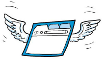

Thorium


Chromium fork for Linux, Windows, MacOS, Android, and Raspberry Pi named after radioactive element No. 90.
This nets a 8-38% performance improvement over vanilla Chromium, depending on the benchmark and OS. See PATCHES.md for a detailed overview of all modifications compared to vanilla Chromium regarding performance, security and useability.
Website under construction. Meanwhile, you can check out the main repository, read the developer blog, view the release notes, or download releases for: